Atalaya · jefa · ficha de diseño · tercera versión, con el muestrario y la mirada de jefa · 13-10-2026
La Gorgona y sus hermanas
La Gorgona: una jefa con cuerpo de mujer adulta y cabellera de serpientes vivas, hecha con las
piezas que elegiste del muestrario, en tres tipos que cambian de forma: las tres hermanas del mito, Medusa, Esteno y
Euríale.
Tercera versión. Está hecha con lo que se quedó del muestrario: la cara C3, los brazos B2, B5 y
B6, las piernas L5, L3 y L2 y el pecho P1. Todo va de bloques, como un modelo de Blockbench. Las fotos van
sin letras y con el borde blanco, y cada hermana tiene su cartel.
Lo que cambié con lo que me dijiste
Cuerpo de mujer adulta, no de niña. La cabeza sigue midiendo 8 píxeles, pero el cuerpo mide 51,5: seis cabezas y
media, cuando el muestrario tenía cuatro (por eso parecía una niña). Lleva el cuello largo, los hombros, la cintura estrecha,
las caderas con la grupa, los muslos que se afinan hacia la rodilla, el gemelo, el tobillo fino y las piernas de la mitad de
la altura.
La cara C3 que elegiste, ya con mirada de jefa (abajo, el antes y el ahora), con los ojos de serpiente
de cada hermana: verde, ámbar y rojo.
Un brazo y una pierna del muestrario por hermana:
Medusa: brazos de bloque con brazaletes de oro y piernas estilizadas con sandalias;
Esteno: armadura de bronce y grebas de bronce;
Euríale: garras y piernas de rodilla limpia con sandalias.
Codos y rodillas doblan por el canto, como un cartón doblado.
El pecho P1, con su ribete de oro, bajo el quitón de un hombro.
Esteno ya no lleva la cola de serpiente, porque pediste piernas y cuerpo de mujer: ahora es la arquera, con
armadura y arco. Si quieres la cola de vuelta para alguna, dímelo.
La cara, más de jefa
Me dijiste que la cara era muy kawaii, que no imponía. Es la misma C3 (mismo tamaño y mismo píxel), pero
con mirada de jefa:
el párpado de arriba cae en ángulo hacia la nariz y tapa la parte de arriba del iris, así que la mirada queda entrecerrada;
la pupila es rasgada y el iris brilla;
las cejas, ahora a la vista, bajan en ceño;
la sombra del flequillo cae sobre los ojos;
lleva un trazo de pintura de guerra bajo el rabillo;
no lleva colorete ni el brillo blanco grande;
la boca es una línea fina con media sonrisa de villana;
la cabeza va un poco inclinada, así que mira desde arriba.
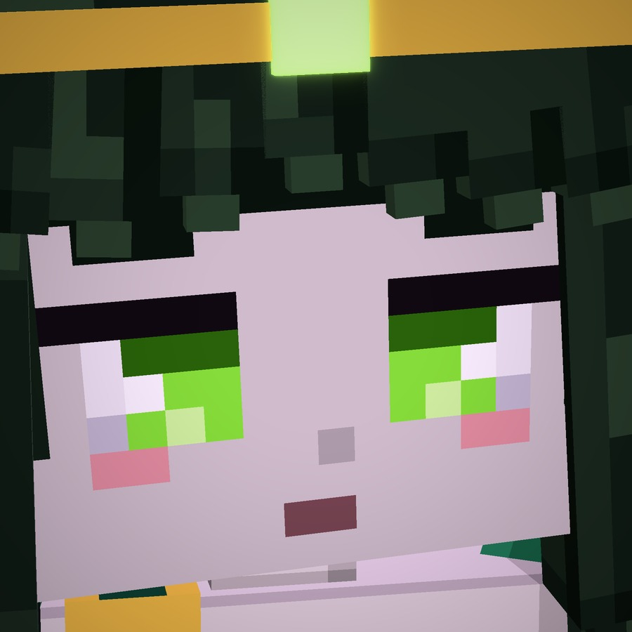
Antes · la C3 del muestrario
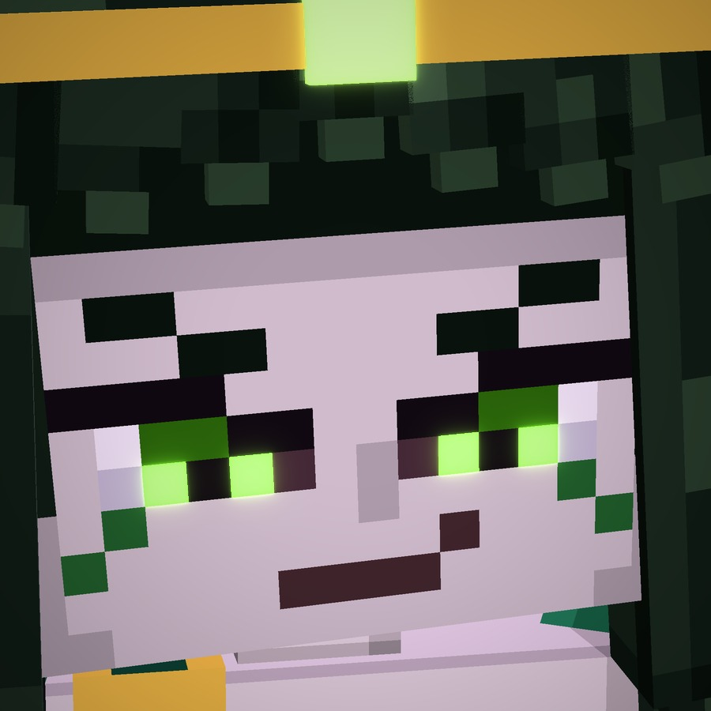
Ahora · Medusa
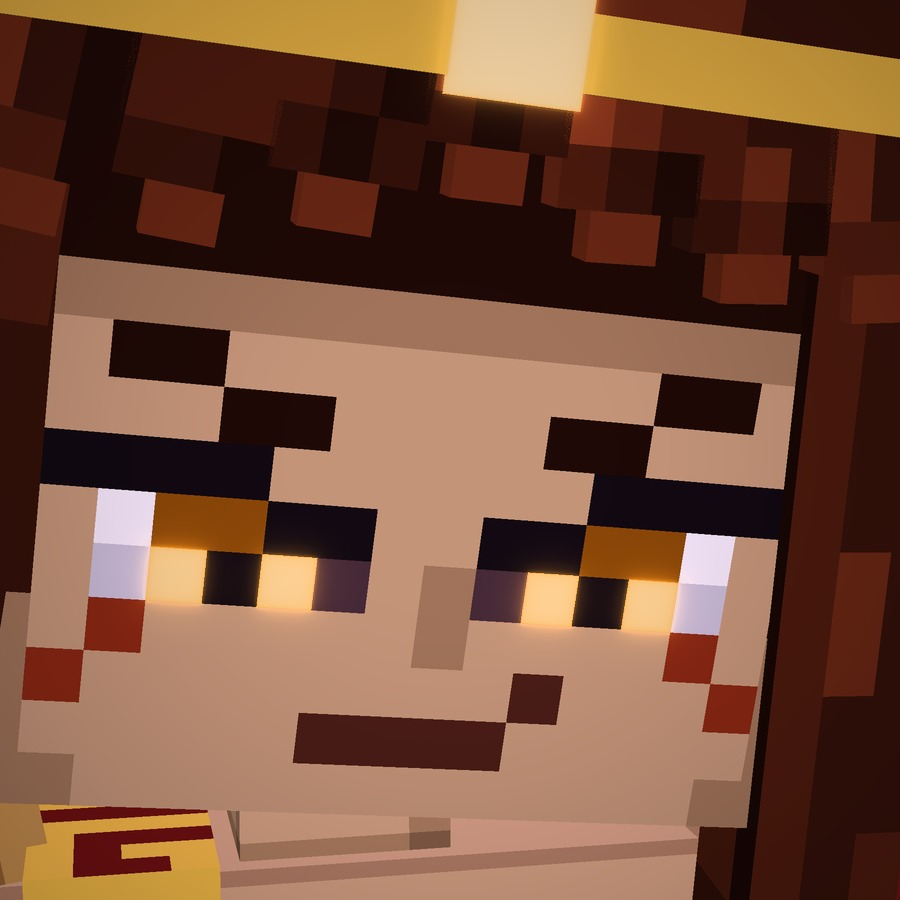
Ahora · Esteno
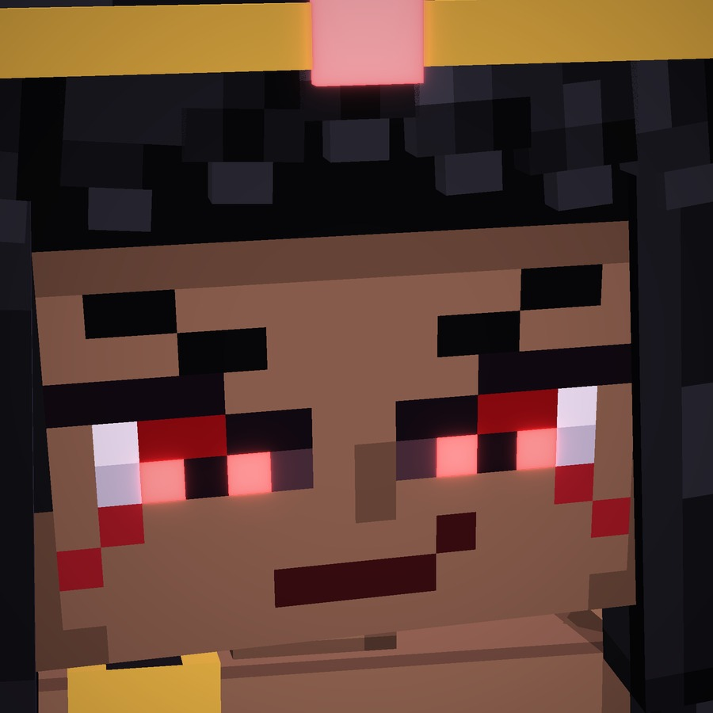
Ahora · Euríale
Cómo es la Gorgona
La mujer
El cuerpo adulto: las caderas, la cintura estrecha, el pecho P1, los hombros y el cuello largo.
El quitón de un solo hombro, con la tira de grecas por el hombro, el cinturón de grecas bajo el pecho y el de oro en
la cintura. La falda es larga y abierta por delante (Medusa) o corta con su cenefa de grecas.
Los brazos y las piernas del muestrario, distintos en cada hermana.
La gorgona
La cara C3 con mirada de jefa, con los ojos de serpiente del color de cada hermana.
La cabellera: trece serpientes de bloques. Cinco suben y miran hacia delante, cuatro salen por los lados y cuatro
caen por la espalda. Cada una tiene el cráneo, el hocico, los ojos encendidos, la boca abierta y dos colmillos.
Las joyas: la diadema de oro con su gema y los pendientes de tres cuentas con la gota encendida.
Las tres hermanas
Las tres comparten cara, cuerpo y cabellera. Cambian la forma, que se distingue de lejos solo por la silueta, y
los brazos y las piernas del muestrario.
A · Medusa · esmeralda y oro
Medusa
La de la mirada que petrifica. Está de pie, con el quitón largo esmeralda abierto por delante, por donde asoma
la pierna con las sandalias de tiras de oro, y la mano en alto, abierta. Tiene brazos de bloque con brazaletes de oro,
piernas estilizadas y la cabellera más grande, de serpientes esmeralda. La piel es de porcelana y la luz, esmeralda.
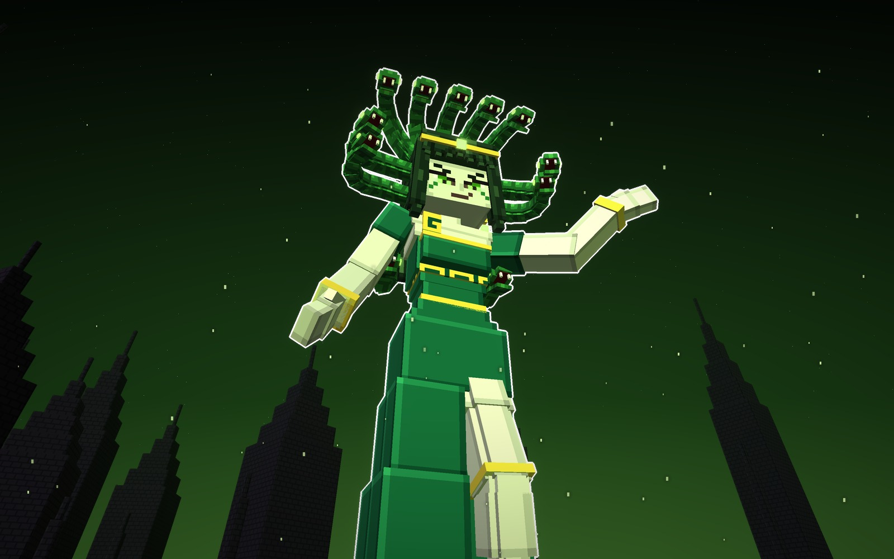
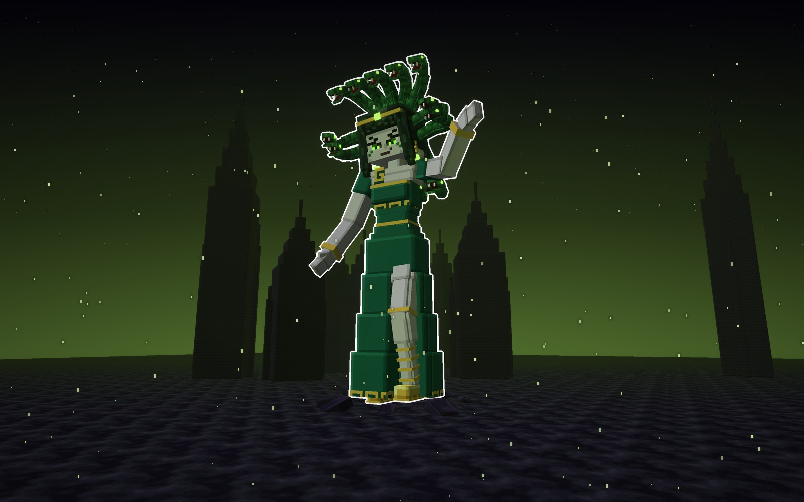
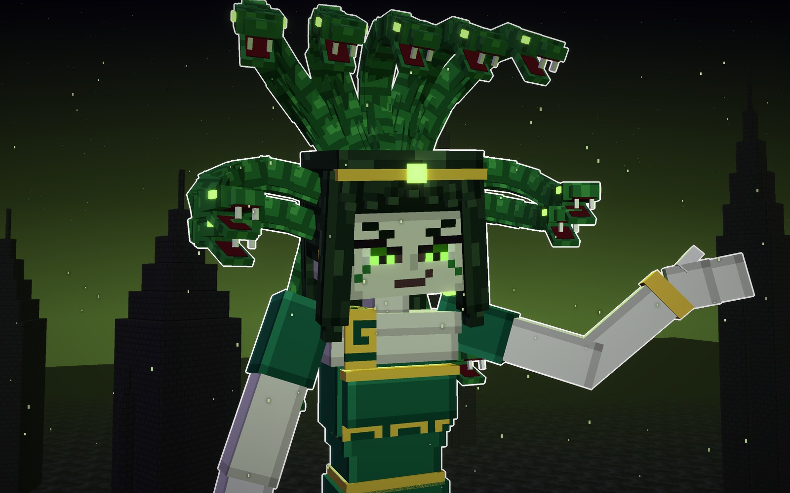
Su forma
Silueta
de pie, alta, con la cabellera de serpientes
Brazos
B2, de bloque con brazaletes de oro
Piernas
L5, estilizadas con sandalias
Luz
esmeralda
Señas
La clásica: se lee como Medusa de un vistazo.
La más estrecha: 20 bloques de ancho; 35 de alto con las serpientes.
pielquitónserpienteojos
B · Esteno · cobre, carmín y bronce
Esteno
La arquera. Lleva la armadura de bronce en los brazos (hombrera de tres láminas, codera, brazal y guantelete),
las grebas de bronce, la falda corta con el faldón de tiras de cuero y el arco recurvado en la mano, con la otra en
alto. Las serpientes son cobrizas, el quitón carmín y la luz, ámbar.
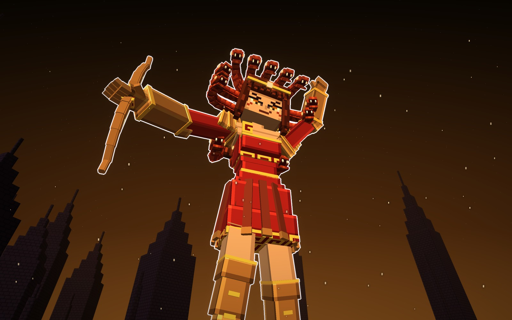
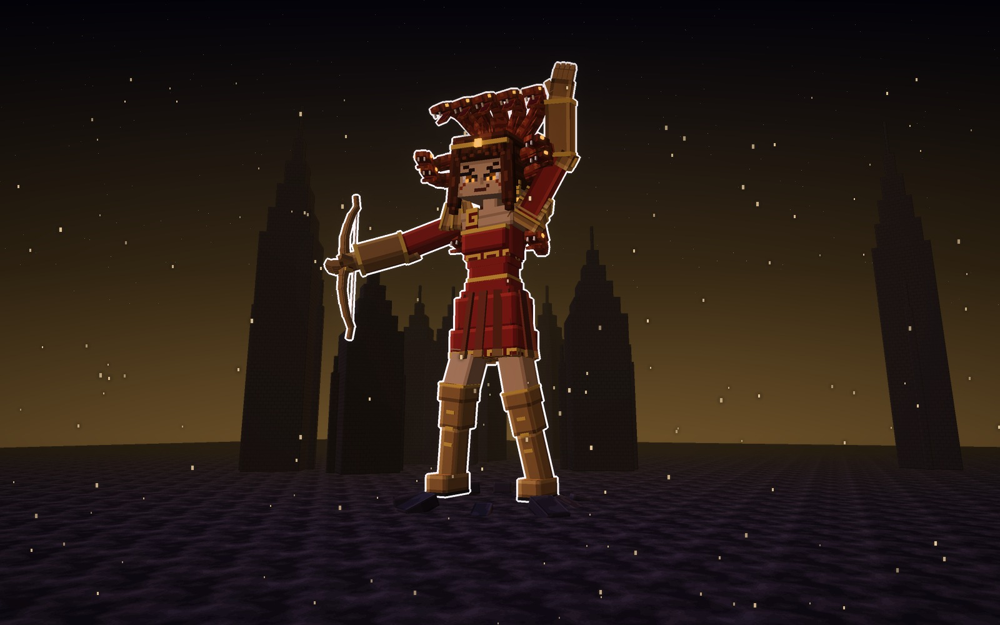
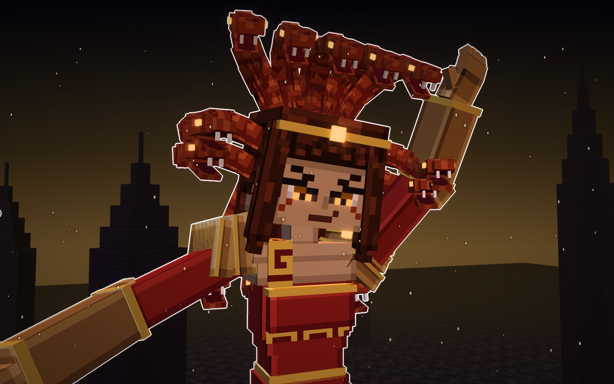
Su forma
Silueta
la arquera, con el arco a un lado y el brazo en alto
Brazos
B5, armadura de bronce con filos de oro
Piernas
L3, grebas de bronce
Luz
ámbar
Señas
La guerrera: el arco da para ataques a distancia.
35 bloques de alto y 23 de ancho con el arco.
pielquitónbronceojos
C · Euríale · negra, oro y carmín
Euríale
La gorgona alada: alas de plumas negras con el borde carmín y el raquis de oro, abiertas detrás de los
hombros. Tiene los brazos abiertos con las garras de escamas y las piernas de rodilla limpia con sandalias, y lleva
un quitón corto negro con oro. La piel es morena, las serpientes negras con los ojos rojos y la luz, carmín.
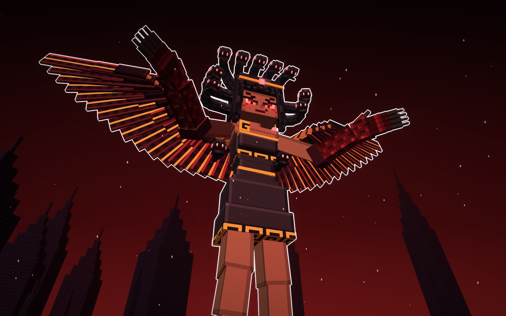
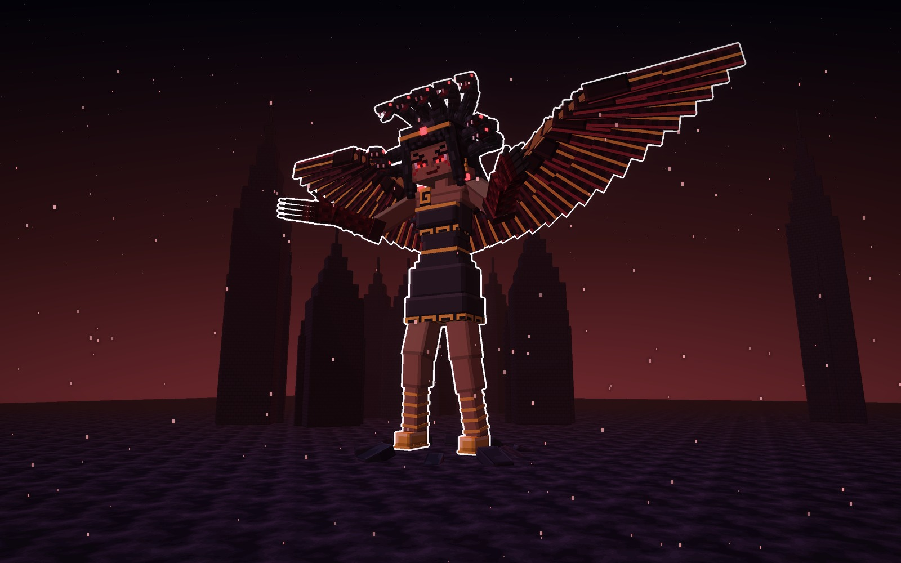
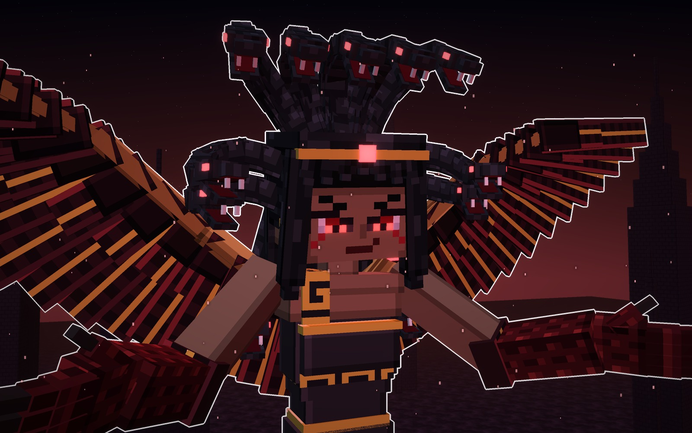
Su forma
Silueta
alas abiertas de punta a punta
Brazos
B6, garras de escamas con gorguera de plumas
Piernas
L2, rodilla limpia con sandalias
Luz
carmín
Señas
La más monstruosa de las tres.
La más ancha: 52 bloques de ala a ala.
pielserpienteplumaojos
Las tres, a escala
Las tres juntas, con la misma luz y un jugador delante (1,8 bloques). Miden unos 30 bloques hasta la coronilla y unos
35 con las serpientes.
Medusa35 de alto · 20 de ancho
Esteno35 de alto · 23 de ancho
Euríale35 de alto · 52 de ala a ala
Los materiales
Las texturas de cada hermana a píxel grande, sin letras. Una fila por hermana y, de izquierda a derecha: la cara C3
con los ojos de su color, la piel, las escamas de serpiente, el quitón, la greca, el oro, el cuero de las tiras y la pluma.
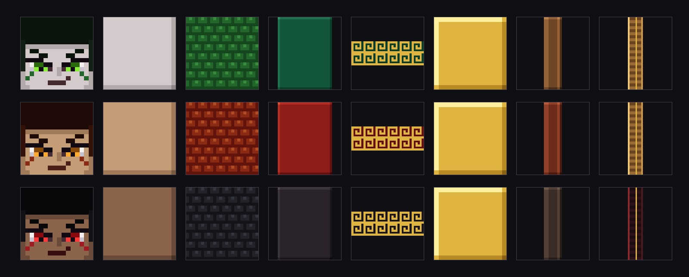
Veredicto de Juan
La dio por buena el 13-10-2026. Primero: «los diseños están bien, solo que la cara es muy kawaii, no parece intimidante o imponente». Con la cara cambiada: «ok, guarda estas 2 y sus tipos en fichas bosses». Y al quitar a Vulpina: «la Gorgona sí tiene ese estilo que buscamos».
Bocetos: materiales/generadores/gorgona_modelo.py, gorgona_escenas.py y jefa_modelo.py (el cuerpo de mujer adulta con
las piezas del muestrario, que comparte con Vulpina).